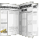

Tips Magazine
Tips Software | |
|
|
|

Toolbook
Tips Magazine
Hundreds of Toolbook Tips online |

Toolbook
Knowledge Nuggets
Download a powerful
offline Tips Reader |
Author Level ...
and Loving it ! |
|
| Asymetrix Toolbook Webring |
|
|
| previous
| random | list | join | next
|
| News
& Special Offers |
Last Updated -
July 18, 2007
 | April 2007
- This website
hasn't been updated for many years, but the popular
Toolbook Knowledge Nuggets
software is still available for download. There is a free
version available, and the PRO version is now registered for free with a
registration code. |
| Jan 2005
- New simpler downloading of all the nugget
archives. |
|
|